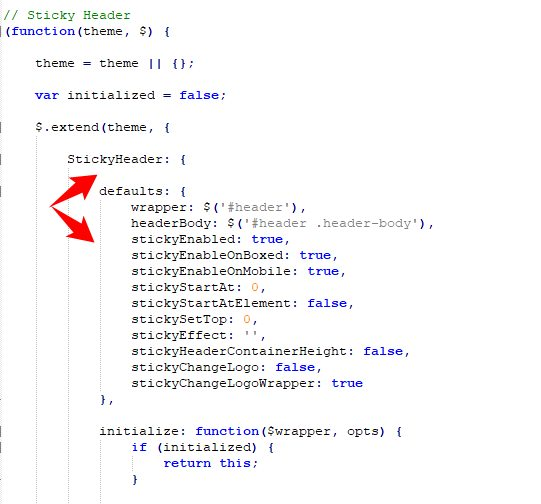
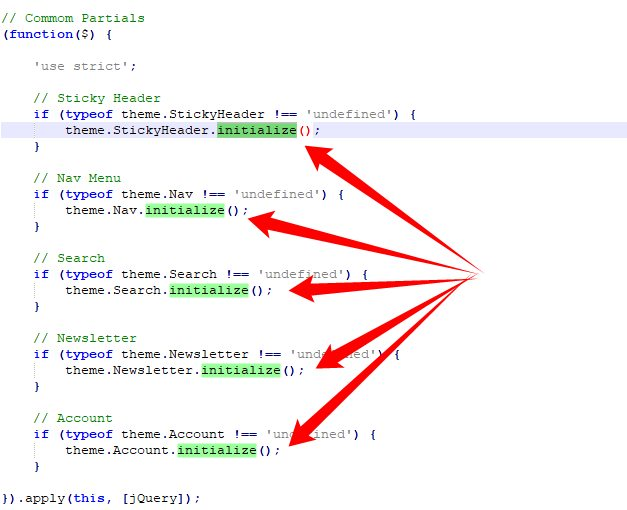
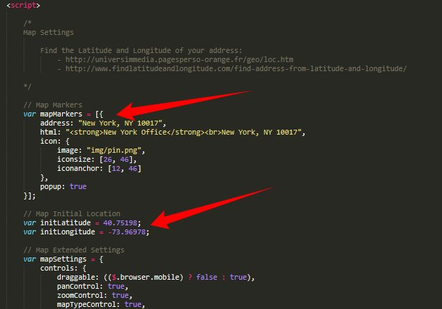
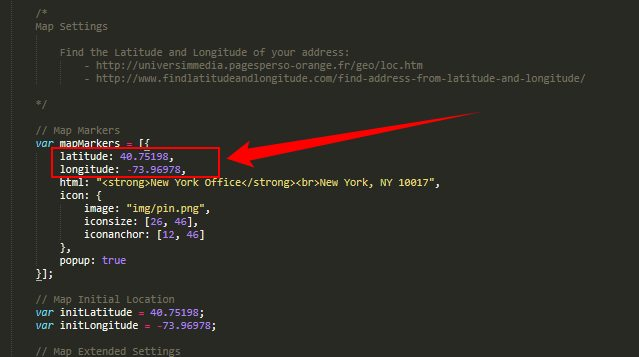
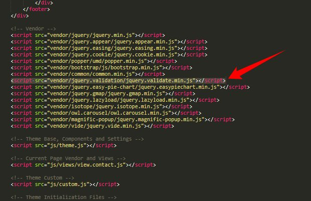
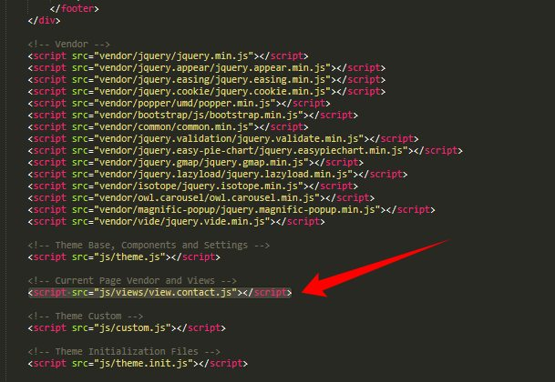
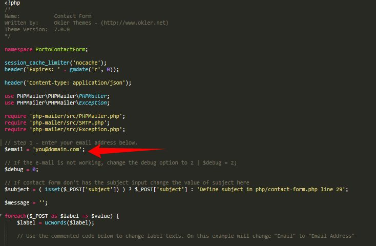
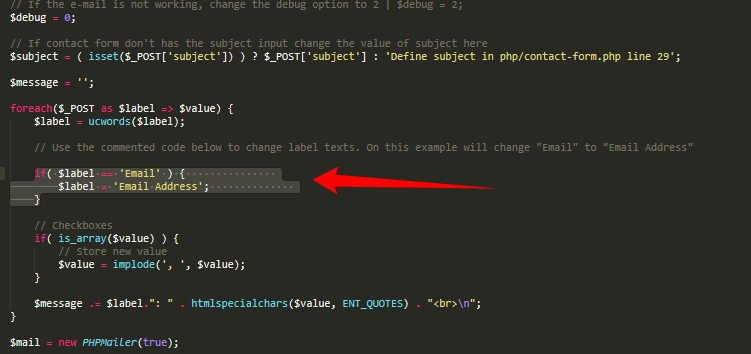

Tips
Files Structure
/ajax(Ajax files)-
/css(Template CSS) /demos(Demos CSSs)/fonts(Font Faces, Font Awesome, etc..)-
/skinsdefault.css...(Create your own skin)
/img(All Images)-
/js(Template JS) /views(JS to run in specific pages. I.E: Home or Contact Us)/master(You don't need to include that folder in your project, it has only the Style Switcher functions)/php(PHP Helpers - I.E: Contact Us form.)/vendor(All external libs. We keep all of them in this folder to make updates easily.)/video(All Videos)
Javascript
It's possible to change the JS settings by extending the defaults from the template, that way is so much
easier to update the theme changing only one JS file.
Here are a few samples on how to do that:
Changing Settings
1) Changing the "scroll to top" icon: (js/custom.js)
$.extend(theme.PluginScrollToTop.defaults, {
iconClass: 'fa fa-chevron-up'
});
2) Changing the "word rotate" default delay: (js/custom.js)
$.extend(theme.PluginWordRotate.defaults, {
delay: 3000
});
You can find all the defaults of the plugins and partials in the file js/theme.js as you can see here:

Changing Plugins Options
The template includes a very simple way to configure the elements that are initialized automatically, such as the sliders, you just need to put the settings in the "data-plugin-options" attribute, as you can see below:
<div id="revolutionSlider" class="slider rev_slider" data-version="5.4.8" data-plugin-revolution-slider data-plugin-options="{'delay': 9000, 'gridwidth': 1170, 'gridheight': 670}">
It works the same way for most of the plugins included in the template: owlCarousel, Word Rotate, Twitter Feed, etc...
If you want to disable the auto initialization you can just add a class "manual" or remove the data-plugin-* attribute:
<div id="revolutionSlider" class="slider rev_slider manual" data-version="5.4.8">
So now you can initialize that using the standard JS mode:
$(document).ready(function() {
$('#revolutionSlider').revolution({
delay:9000,
gridwidth:1170,
gridheight:670
...
...
});
});
Remove/Disable a Plugin or Partial
If you want to remove/disable a plugin or partial that has a "initialize" function completely, follow this example: (js/custom.js)
theme.PluginScrollToTop.initialize = function() {};
You can find all the available plugins and partials in the file js/theme.init.js as you can see here:

HTML Structure
The template is based on Bootstrap 4 Framework - http://getbootstrap.com
Bootstrap includes a responsive, mobile first fluid grid system that appropriately scales up to 12 columns as the device or viewport size increases.
<div class="row"> <div class="col-md-12"> Level 1 column <div class="row"> <div class="col-md-6">Level 2</div> <div class="col-md-6">Level 2</div> </div> </div> </div>
If you need more information, please visit this site: https://getbootstrap.com/docs/4.1/layout/grid/
Grid Layout with 5 columns
If you want a grid layout with 5 columns:<div class="row"> <div class="col-md-1-5"> Column 1 </div> <div class="col-md-1-5"> Column 2 </div> <div class="col-md-1-5"> Column 3 </div> <div class="col-md-1-5"> Column 4 </div> <div class="col-md-1-5"> Column 5 </div> </div>
CSS Structure
The organization of the CSS is one of our priorities.
These are the CSS file we're using in the template:
theme.css- (The basic layout structure styles)theme-elements.css- (Elements such as sliders, boxes, titles, etc...)theme-shop.css- (Shop Pages styles)theme-blog.css(Blog Pages styles)custom.css(Add all customizations into this file)
CSS Helper Classes
Bootstrap Helpers
Bootstrap 4 comes with various utilities/helper classes. Access the link below to see all possibilities:
https://getbootstrap.com/docs/4.1/utilities/text/Text Helpers
| Class | Description |
|---|---|
|
From: .text-1 Until: .text-15 |
Changes text font size in all resolutions |
|
From: .text-sm-1 Until: .text-sm-15 |
Changes text font size from small resolution |
|
From: .text-md-1 Until: .text-md-15 |
Changes text font size from medium resolution |
|
From: .text-lg-1 Until: .text-lg-15 |
Changes text font size from large resolution |
|
From: .text-xl-1 Until: .text-xl-15 |
Changes text font size from extra large resolution |
|
From: .line-height-1 Until: .line-height-9 |
Changes text line height in all resolutions |
|
From: .line-height-sm-1 Until: .line-height-sm-9 |
Changes text line height from small resolution |
|
From: .line-height-md-1 Until: .line-height-md-9 |
Changes text line height from medium resolution |
|
From: .line-height-lg-1 Until: .line-height-lg-9 |
Changes text line height from large resolution |
|
From: .line-height-xl-1 Until: .line-height-xl-9 |
Changes text line height from extra large resolution |
| .line-height-initial | Changes text line height in all resolutions |
| .line-height-sm-initial | Changes text line height from small resolution |
| .line-height-md-initial | Changes text line height from medium resolution |
| .line-height-lg-initial | Changes text line height from large resolution |
| .line-height-xl-initial | Changes text line height from extra large resolution |
| .text-uppercase | Uppercase text |
| .text-lowercase | Lowercase text |
| .text-capitalize | Capitalize text |
| .text-transfrom-none | None text transform |
| .text-decoration-none | None text decoration |
| .text-muted | Muted text |
| .font-weight-light | Changes text font weight |
| .font-weight-normal | Changes text font weight |
| .font-weight-semibold | Changes text font weight |
| .font-weight-bold | Changes text font weight |
| .font-weight-extra-bold | Changes text font weight |
| .ls-0 | Changes text letter spacing |
| .negative-ls-1 | Changes text letter spacing |
| .negative-ls-2 | Changes text letter spacing |
| .negative-ls-3 | Changes text letter spacing |
| .positive-ls-1 | Changes text letter spacing |
| .positive-ls-2 | Changes text letter spacing |
| .positive-ls-3 | Changes text letter spacing |
| .text-color-primary | Changes text color to the primary color |
| .text-color-secondary | Changes text color to the secondary color |
| .text-color-tertiary | Changes text color to the tertiary color |
| .text-color-quaternary | Changes text color to the quaternary color |
| .text-color-dark | Changes text color to the dark color |
| .text-color-light | Changes text color to the light color |
Others
| Class | Description |
|---|---|
| .opacity-0 | Changes element opacity |
| .opacity-1 | Changes element opacity |
| .opacity-2 | Changes element opacity |
| .opacity-3 | Changes element opacity |
| .opacity-4 | Changes element opacity |
| .opacity-5 | Changes element opacity |
| .opacity-6 | Changes element opacity |
| .opacity-7 | Changes element opacity |
| .opacity-8 | Changes element opacity |
| .opacity-9 | Changes element opacity |
| .opacity-10 | Changes element opacity |
| .scale-1 | Changes element transform scale |
| .scale-2 | Changes element transform scale |
| .scale-3 | Changes element transform scale |
| .scale-4 | Changes element transform scale |
| .scale-5 | Changes element transform scale |
| .scale-6 | Changes element transform scale |
| .top-auto | Changes element top position |
| .bottom-auto | Changes element bottom position |
|
From: .top-0 Until: .top-10 |
Changes element top position |
|
From: .bottom-0 Until: .bottom-10 |
Changes element bottom position |
|
From: .left-0 Until: .left-10 |
Changes element left position |
|
From: .right-0 Until: .right-10 |
Changes element right position |
| .p-relative | Changes position to relative |
| .p-absolute | Changes position to absolute |
| .p-fixed | Changes position to fixed |
| .p-static | Changes position to static |
| .box-shadow-none | Remove box shadow |
| .cur-pointer | Changes cursor to pointer |
| .outline-none | Changes outline to none |
| .overflow-hidden | Changes overflow to hidden |
| .overflow-visible | Changes overflow to visible |
| .z-index-0 | Changes element z-index |
| .z-index-1 | Changes element z-index |
| .z-index-2 | Changes element z-index |
| .z-index-3 | Changes element z-index |
| .no-borders | Remove element borders |
| .rounded | Changes border radius |
| .b-thin | Changes border width |
| .b-normal | Changes border width |
| .b-thick | Changes border width |
| .ws-nowrap | Changes white space |
| .ws-normal | Changes white space |
| .ws-auto-mobile | Changes width to auto on mobile devices |
| .w-100-mobile | Changes width to 100% on mobile devices |
| .overlay | Adds an overlay effect when mouse hover |
| .overlay .overlay-show | Adds an overlay effect always visible |
| .overlay .overlay-show .overlay-op-5 | Adds an overlay effect always visible with opacity level 0.5 (possible values for opacity is from "-op-1" until "-op-9") |
Customization & Styles
Colors
The style switcher was made to support unlimited skin colors, for that we use Less (http://www.lesscss.org/) to process the CSS dinamically in the
demo and show the color right away.
You don't need to use LESS in your project, after you done customizing your skin you may want to
grab the generated code and save it in a file in the folder:
/css/skins/(skin-name).css
Learn More: How to change the Skin
Layout Style (Normal/Boxed)
The template has two different layout modes, Wide and Boxed. The wide one is the default option, if you want to use the Boxed version, add the following class in the <html>:
<html class="boxed">
You can also customize the background color or image.
Background Color (Light/Dark)
The template has two different background colors, Light and Dark. The light one is the default option, if you want to use the Dark version, add the following class in the <html>:
<html class="dark">
Fonts
To change the embedded font, please take a look in the head part of the website and you will find this tag:
<link href="http://fonts.googleapis.com/css?family=Open+Sans:300,400,600,700,800|Shadows+Into+Light" rel="stylesheet" type="text/css">To change the font, first go to http://www.google.com/webfonts choose a font and use the generated code.
Icons
Font Awesome is a @font-face iconset that you can change size and color of the icons
using CSS.
If you need more information, please visit this site: http://fontawesome.io/
<i class="fa fa-edit"></i> <i class="fa fa-search"></i> ...
Simple Line Icons is a @font-face iconset that you can change size and color of the
icons using CSS.
If you need more information, please visit this site: https://github.com/thesabbir/simple-line-icons
<i class="icons icon-user"></i> <i class="icons icon-people"></i> ...
Project Video
The video background are driven by the Vide Plugin - https://github.com/VodkaBears/Vide
Here's an example of usage:
<section class="video section section-video" data-video-path="video/memory-of-a-woman" data-plugin-video-background data-plugin-options="{'posterType': 'jpg', 'position': '50% 50%', 'overlay': true}">
Prepare your video in several formats like '.webm', '.mp4' for cross browser compatability, also add a
poster with .jpg, .png or .gif extension and set in the attribute
data-video-path.
Here's all possible options you can define trough data-plugin-options="{....}":
Google Maps
Usage of the Google Maps APIs requires a key. If you are using the Google Maps API it will require a key going forward.
1) Get an API key: https://developers.google.com/maps/documentation/javascript/get-api-key
2) Add the API key in the HTML (Script)

<script src="https://maps.googleapis.com/maps/api/js?key=YOUR_API_KEY"></script>
3) Configure the map location. For example, using as base the file contact-us.html:
METHOD 1:
Open the file using a text editor and go to the bottom of document. You will see the javascript code below:

Change the address in the mapMarkers array.
METHOD 2:
If you want to set the locations using Latitude and Longitude:
Replace the JS script in the HTML to this one:

Here’s a good website to find the coordinates of your address: https://www.latlong.net/
Contact Form
1) HTML:
<form id="contactForm" class="contact-form appear-animation" action="php/contact-form.php" method="POST" data-appear-animation="fadeIn" data-appear-animation-delay="600"> <div class="contact-form-success alert alert-success d-none mt-4" id="contactSuccess"> <strong>Success!</strong> Your message has been sent to us. </div> <div class="contact-form-error alert alert-danger d-none mt-4" id="contactError"> <strong>Error!</strong> There was an error sending your message. <span class="mail-error-message text-1 d-block" id="mailErrorMessage"></span> </div> <div class="form-row"> <div class="form-group col-lg-6"> <label class="required font-weight-bold text-dark">Full Name</label> <input type="text" value="" data-msg-required="Please enter your name." maxlength="100" class="form-control" name="name" id="name" required> </div> <div class="form-group col-lg-6"> <label class="required font-weight-bold text-dark">Email Address</label> <input type="email" value="" data-msg-required="Please enter your email address." data-msg-email="Please enter a valid email address." maxlength="100" class="form-control" name="email" id="email" required> </div> </div> <div class="form-row"> <div class="form-group col"> <label class="font-weight-bold text-dark">Subject</label> <input type="text" value="" data-msg-required="Please enter the subject." maxlength="100" class="form-control" name="subject" id="subject" required> </div> </div> <div class="form-row"> <div class="form-group col"> <label class="required font-weight-bold text-dark">Message</label> <textarea maxlength="5000" data-msg-required="Please enter your message." rows="8" class="form-control" name="message" id="message" required></textarea> </div> </div> <div class="form-row"> <div class="form-group col"> <input type="submit" value="Send Message" class="btn btn-primary btn-modern" data-loading-text="Loading..."> </div> </div> </form>
2) Make sure that you have the jQuery Validate plugin included on document:

3) Add the script "view.contact.js" on footer of document. Like the image below:

4) In php/contact-form.php change the value of variable $email to your email
(the email that will receive contacts)

4.1) OPTIONAL: You can easily change the label text of each field. For example, to change "Email" for "Email Address" just uncomment the code like on image below:

Contact form is not working ?
Try the solution on this link: http://www.okler.net/forums/topic/important-contact-form-is-not-working/
Contact Form receiving blank emails / {"response":"success"}
Make sure that you made the step 3 of tutorial above.
Effects
You can add some Animations / Transitions to the elements which fires when an element scrolls into view,
it's pretty simple to use and you can add it in any element.
Usage:
<div class="appear-animation" data-appear-animation="bounceIn" data-appear-animation-delay="200"> ... </div>
Heads up: The Attribute data-appear-animation-delay is Optional and is set in Miliseconds.
The animation can be set to all possible options of Animate.css:
https://daneden.github.io/animate.css/